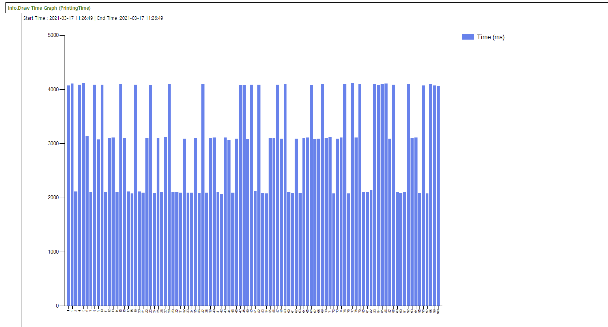

Info library provides keywords for measuring performance during execution. Please note that time of result is not accurate enough but see the trend to identify performance issues.
Following sample script just provides usages of Info library. All other actions such as app launch or login are replaced to comment or Random Sleep.
using Info
Sample Performance Check
{
Info.Start Time Check (LoginTime) // Define measure set for Login Time
Info.Start Time Check (PrintingTime) // Define measure set for Printing Time
@Repeat:100
{
// App launch
// Check Login Screen
Info.Mark Start (LoginTime,${R}) // Set start point of login time
// Login script will be placed
Random Sleep (1,3)
Info.Mark End (LoginTime,${R}) // Set end point of login time
// File select
// Set Print options
Info.Mark Start (PrintingTime,${R})
// Waiting until printing is done
Random Sleep (2,4)
Info.Mark End (PrintingTime,${R})
}
Assert Last Repeat (Pass,>99)
Info.Draw Time Graph (LoginTime) // Generate graph for login time
Info.Draw Time Graph (PrintingTime) // Generate graph for printing time
}After execution, you can see the result of time measure data in CSV format in your output folder and also you can see trend graph in the report as below:

If you run the GFriend script inside GFriendExecutionPlugin within STF/STB, you can link measure set with Device Workflow Marker(Performance Marker) as below example.
using Info
STF Auth Perf Marker
{
Info.Start Time Check (STF_Authentication)
Info.Start Time Check (STF_AppShown)
Info.Mark Start (STF_Authentication,1) // Will be recorded "AuthenticationBegin" in STF
Random Sleep (1,3)
Info.Mark End (STF_Authentication,1) // Will be recorded "AuthenticationEnd" in STF
Info.Mark Start (STF_AppShown,1) // Will not be recorded.
Random Sleep (1,4)
Info.Mark End (STF_AppShown,1) // Will be recorded "AppShown" in STF
}Followings are Device Workflow Markers in STF
ActivityBegin : Marks when the solution activity begins
ActivityEnd : Marks when the solution activity ends
AppButtonPress : Marks the time of Application/Solution Button Press.
AppShown : Marks the time the application/solution screen is shown.
AuthenticationBegin : Marks the time Authentication begins.
AuthenticationEnd : Marks the time Authentication ends.
AuthType : Marks the time Authentication ends.
CalibrationBegin : Marks when a calibration begin is detected.
CalibrationEnd : Marks when a the calibration end is detected.
DeleteBegin : Marks the time when a solution begins deleting selected jobs.
DeleteEnd : Marks the time when a solution ends deleting selected jobs.
DeviceButtonPress : Marks the time when a solution ends deleting selected jobs.
DeviceLockBegin : Marks the time a device lock begins.
DeviceLockEnd : Marks the time device lock ends.
DeviceSignOutBegin : Marks the time a device sign out begins.
DeviceSignOutEnd : Marks the time device sign out ends.
DocumentListReady : Marks the time when the solution's document list is fully presented and ready for use.
EnterCredentialsBegin : Marks the time when entering the credentials for Authentication begins.
EnterCredentialsEnd : Marks the time when entering the credentials for Authentication ends.
ImagePreviewBegin : Marks the time when image preview begins.
ImagePreviewEnd : Marks the time when image preview has completed.
JobBuildBegin : Marks the time when job build begins.
JobBuildEnd : Marks the time when job build has completed.
NavigateHomeBegin : Marks when the system starts to navigate home
NavigateHomeEnd : Marks when the system is on the home screen
PrintAllBegin : Marks the time when a solution's method of printing all jobs begins.
PrintAllEnd : Marks the time when a solution's method of printing all jobs ends.
PrintDeleteBegin : Marks the time when a solution's method of deleting selected documents begins.
PrintDeleteEnd : Marks the time when a solution's method of deleting selected documents ends.
PrinterListReady : Marks the time when the solution's printer list is presented and ready for use.
PrintJobBegin : Marks the time when the device first starts printing the job.
PrintJobEnd : Marks the time a print job ends.
PrintKeepBegin : Marks the time a solution's (Pull Print) prints and keeps the selected jobs begins.
PrintKeepEnd : Marks the time a solution's (Pull Print) prints and keeps the selected jobs has ended.
ProcessingJobBegin : Marks the time when the device or workflow event begins process the requested job
ProcessingJobEnd : Marks the time that processing a job ends.
PullingJobFromServerBegin : Marks the time when the solution starts to pull a job from a pull print server.
PullingJobFromServerEnd : Marks the time when the solution ends pulling a job from a pull print server.
QuickSetListReady : Marks the time when the solution's QuickSet list is fully presented and ready for use.
RefreshBegin : Marks the time when a solution begins refreshing the document list.
RefreshEnd : Marks the time when a solution ends refreshing the document list.
ScanJobBegin : Marks the start of when a scan job begins.
ScanJobEnd : Marks the end of when the scan job ends
SelectDocumentBegin : Marks the time when a solution begins selecting documents (1 to n) from the document list.
SelectDocumentEnd : Marks the time when a solution ends selecting documents (1 to n) from the document list.
SendingJobBegin : Marks the time when the sending of a job begins.
SendingJobEnd : Marks the time when the sending of a job ends.
SignOutType : Marks the time when the sending of a job ends.
FirmwareUpdateBegin : Marks the time when a firmware update begins
FirmwareUpdateEnd : Marks the time when a firmware update ends
DeviceRebootBegin : Marks the time when a device begins rebooting
DeviceRebootEnd : Marks the time when a device finishes rebooting (EWS is up)
WebServicesUp : Marks the time when a web services comes up
EmbeddedWebServerUp : Marks the time when a device finishes rebooting (EWS is up)
GFriendExeuctionStart : Marks the time when a GFriend Exeuction is started
GFriendExeuctionEnd : Marks the time when a GFriend Exeuction is ended